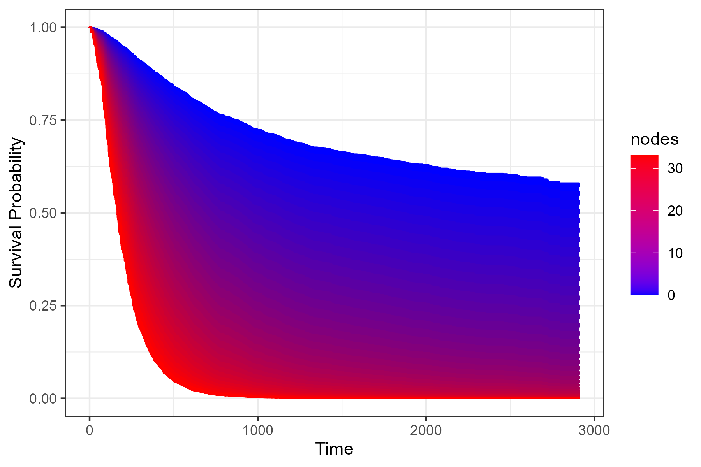
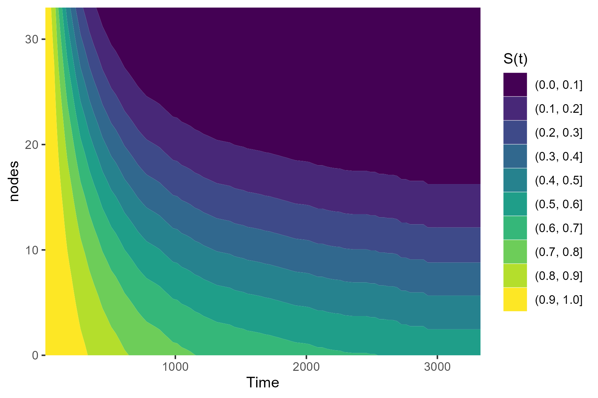
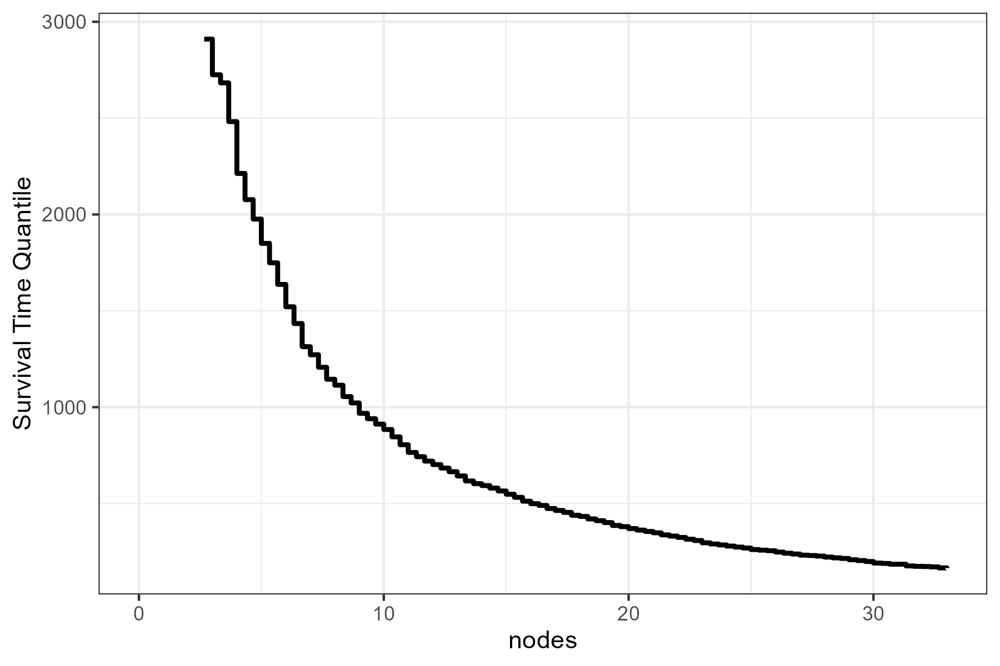

Author: Robin Denz
Description
contsurvplot is an R-Package which can be used to visualize the causal effect of a continuous variable on a time-to-event outcome. It includes multiple different plot types, such as survival area plots, contour plots, heatmaps, survival quantile plots and more. All of them can be adjusted for confounders and all of them have a lot of build in options to customize them according to the users needs. Also, most of the plot functions are based on the ggplot2 package, allowing the user to use the standard ggplot2 syntax to customize the plots further.
Installation
The stable release version can be installed directly from CRAN using:
install.packages("contsurvplot")Alternatively, the development version can be installed using the devtools R-Package:
or the remotes R-Package:
Bug Reports and Feature Requests
If you encounter any bugs or have any specific feature requests, please file an Issue.
Examples
Here are two quick examples using the colon dataset from the survival R-Package. Suppose we want to visualize the effect of the number of lymph nodes with detectable cancer (column nodes) on the survival time. A survival area plot can be produced using the following code:
library(contsurvplot)
library(ggplot2)
library(survival)
library(riskRegression)
# load colon data
data(cancer)
# fit cox model, adjusting for age and sex
model <- coxph(Surv(time, status) ~ age + sex + nodes, data=colon, x=TRUE)
# plot survival area
plot_surv_area(time="time",
status="status",
variable="nodes",
data=colon,
model=model)
Alternatively, we can plot a contour plot to visualize the effect:
plot_surv_contour(time="time",
status="status",
variable="nodes",
data=colon,
model=model)
Or we can use a simple plot of the median survival time as a function of nodes:
plot_surv_quantiles(time="time",
status="status",
variable="nodes",
data=colon,
model=model,
p=0.5)
More examples can be found in the documentation and the vignette.
Citation
The main paper associated with this R-Package is:
Robin Denz, Nina Timmesfeld (2023). Visualizing the (causal) effect of a continuous variable on a time-to-event outcome. Epidemiology. 34.5 doi:10.1097/EDE.0000000000001630
In addition, some relevant literature can be found in the documentation pages.
License
© 2022 Robin Denz
The contents of this repository are distributed under the GNU General Public License. You can find the full text of this License in this github repository. Alternatively, see http://www.gnu.org/licenses/.